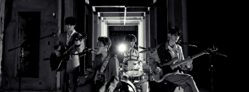

El k-rock comenzó su auge en el país asiático en los años cincuenta, ya tienen un poquito más que la revolución del pop que ahora conocemos, con la música de Shin Jung Hyeon y su banda. Shin Jung Hyeon fue el encargado en darle al rock and roll el estilo coreano, hasta 1962 que fundó la primera banda coreana. Durante los años setenta, la música fue censurada en Corea del Sur, además de que Jung Hyeon terminó en la cárcel, por posesión de drogas, que en otro momento te contaré sobre esto. Han Dae Seo, integrante de la banda de Jung Hyeon, decidió exiliarse a Nueva York después de la censura que sufrieron sus dos discos, siendo prohibidos por el gobierno surcoreano.

Después del encarcelamiento de Shin, la música rock coreana se vio afectada en su producción, pero otros artistas continuaron con el auge del género k-rock destacando a Sanulrim, la cual surgió a finales de los años setenta, antes de que el dance se volviera popular. En los ochentas, el gusto del público se fue alejando poco a poco con la inclusión del dance nostálgico de la época, pero aún así estaba siendo presente con el heavy metal hecho por las bandas Boohwal, Baekdoosan, y Sinawe, considerados Big 3 en la escena musical rockera coreana o k-rock.
Los noventa fueron el resurgir del rock, siendo la época donde la información y el gobierno de Roh Tae Woo corría sin filtros y censura. En este renacer, fue la oportunidad perfecta para las dos bandas formadas durante los inicios de la década, Cying Nut y No Brain, introduciendo al público coreano en el Chosun punk, una mezcla de varios géneros pesados, además de creciente presencia de Club Drug. Al llegar el nuevo milenio y el auge de las nuevas tecnologías que iban creciendo en el mundo, el rock coreano fue diversificándose y fueron saliendo varias bandas representativas de las ramas que fueron naciendo del k-rock.
Así fue como nacieron bandas como Rux, The Geeks, siendo los que introdujeron a los coreanos al hardcore punk y al straight eye. Además, durante los inicios de la primera década del milenio, también hubo la inclusión del ska dentro de Corea del Sur, con las bandas Lazybone, Skasucks y Beach Valley, siendo íconos del ska punk, el cual tomó más fuerza en el 2006. Actualmente, hemos visto los k-popers el debut de muchas bandas que han ido figurándose entre el mundo del k-rock y el k-pop, como CNBLUE, TRAX, FT Island, Day6, y la más reciente como The Rose, N.Flying y Golden Child. Además, tenemos a los solistas 10cm, Suho (integrante de EXO, que podría quedar en el soft rock/folk), Seo Taiji, Kim Jae Joong, Raiden, Yoari, entre otros. Además, con el paso del tiempo, en Corea del Sur, además de crear festivales especiales para el k-pop, podemos disfrutar de varios eventos para el k-rock, como: